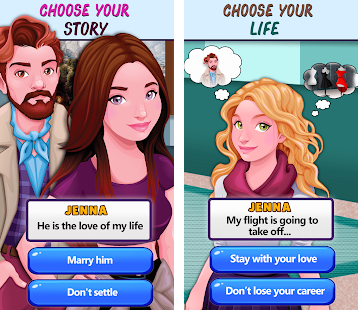

Rendered Ideas'
Virtual Life Interactive
- Custom Engine | Java
-
Target Platforms
This was my frst experience as the only programmer in the team of three : One Programmer, One Artist & One Animator. I had the opportunity to apply all those concepts about language grammar, lexers and parsers that I studied at college, to create a custom scripting language as a tool for designers & non-programmers to write the game script.
I started off as a gameplay programmer on this but ended up becoming a tool programmer.
The work that went into creating this tool is inspired from :
- Visual Novel Engine : Ren'Py
- Storytelling App : Episode Interactive

This was a story based game where you control the fate of your favorite characters by choosing between the options that pop on your screen.
Each option leads to a different path and each path to a new outcome.
Unlike visual novels where there are mostly static images and fixed dialogue box position, this game had character animations and dynamic spatial dialogue boxes that would appear on any specified character or at any given position in the game.
It even had a book shelf as a main UI , where you have a bunch of stories to be played in the form of books stacked on the shelf which you could then browse by scrolling up and down.
It had more than one playable story, which meant that with each story you would get a different gameplay. I could see that programming this game just like a normal game would increase my work as a gameplay programmer.
I wanted a setup where I don't have to program gameplay for every story. This led me to the idea of employing a game script that even a
non-programmer could write.
When it was time to design the game script :
The idea was simple, write a script, load the file into the code and parse the data. Then use that data to do stuff in your game.
The first step was to note down what kind of features the game could handle. This included game object transformations, animations, visual effects, audio effects etc.
Next step was to identify how to convert these features into set of typable instructions.
For example, the script could contain instructions like,
- Play music, "Nocturne op.9 No.2.wav".
- The screen is dark.
- The darkness fades out wth some speed and the screen is visible.
- Camera is focussed on David.
- David walks from left to right.
- David says, "Ah! The classics! The problem with this nocturne is that it ends".
- The darkness fades in with some speed and the screen is black again.
When it was time to use an editor for the game script :
For this we needed a way that would enable the storytellers to design the flow of their story.
Initially, I went with a tool :
YarnEditor, which is something that has been previously used by other games that involved choices.
This tool lets you create and edit multiple nodes and allows them to be linked together to form a graph.
It even lets you output the whole visual graph data into a text format which you can then parse and use it in your code.
Which is what I did. Everything went well for a while. It worked fine for simpler and shorter data, however when the story started becoming larger and complex, the tool became rather dificult to manage. It was a spaghetti of links.
Also, as this tool is still being developed it was not perfect and we would occasionally run into issues with saving and loading of the data.
Another thing that bothered me a lot was how restrictive it felt when editing the nodes. It had its own editor which was very plain and had no text color schemes and other formatting options.
The only reason we used this tool was for its ability to visually represent the branches. Seeing how terribly that panned out for larger data, we decided to drop it.
We eventually ended up using :
Sublime where I wrote a custom syntax definition to support the type of syntax highlighting I wanted for the game script.
It gave me the freedom to define which part of the script gets which color. If the script file type is not the one I defined, then sublime won't recognize it and won't apply the syntax definition, which also acts as a visual feedback to let you know that the script file type is incorrect.